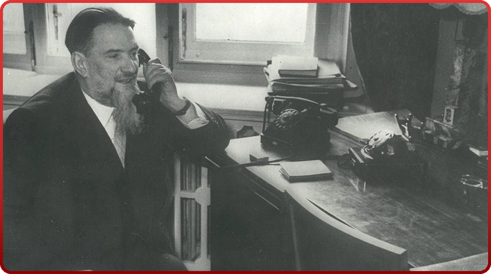
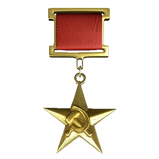
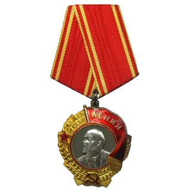
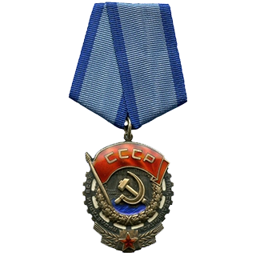
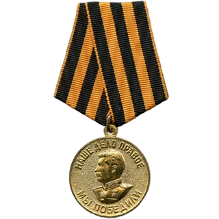
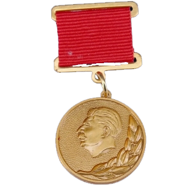
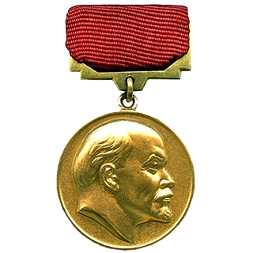

ИГОРЬ ВАСИЛЬЕВИЧ КУРЧАТОВ
(1903-1960)
Игорь Васильевич Курчатов — выдающийся советский физик, основатель и первый руководитель Института атомной энергии, «отец» советской атомной бомбы. Родился 12 января 1903 года в поселке Симский завод (ныне город Сим) в семье землемера. В 1923 году окончил Крымский университет в Симферополе, после чего работал преподавателем физики. С 1925 года начал научную деятельность в Ленинградском физико-техническом институте под руководством А. Ф. Иоффе. Вместе с сотрудниками открыл явление сегнетоэлектричества. В 1930-х годах переключился на изучение атомного ядра. Руководил созданием первого в Европе циклотрона (1937) и исследовал ядерные реакции. В годы Великой Отечественной войны Курчатов был назначен научным руководителем советской программы по созданию ядерного оружия. Под его руководством в кратчайшие сроки были созданы первый ядерный реактор (1946), получен плутоний и 29 августа 1949 года успешно испытана первая советская атомная бомба (РДС-1). Руководил созданием первой в мире водородной бомбы (1953). Впоследствии сосредоточился на проблемах мирного использования атомной энергии: под его руководством была запущена первая в мире атомная электростанция в Обнинске (1954), заложены основы атомного подводного флота и ледоколостроения.
НАГРАДЫ И. В. КУРЧАТОВА





